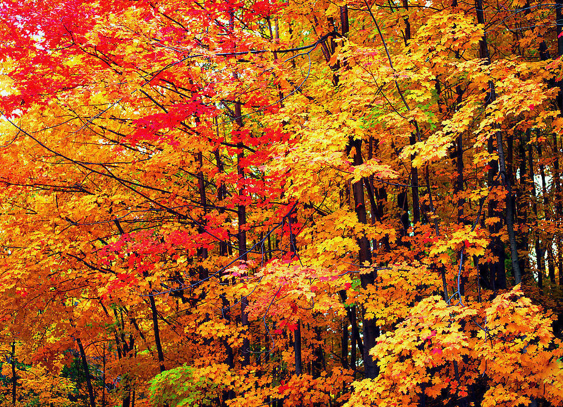
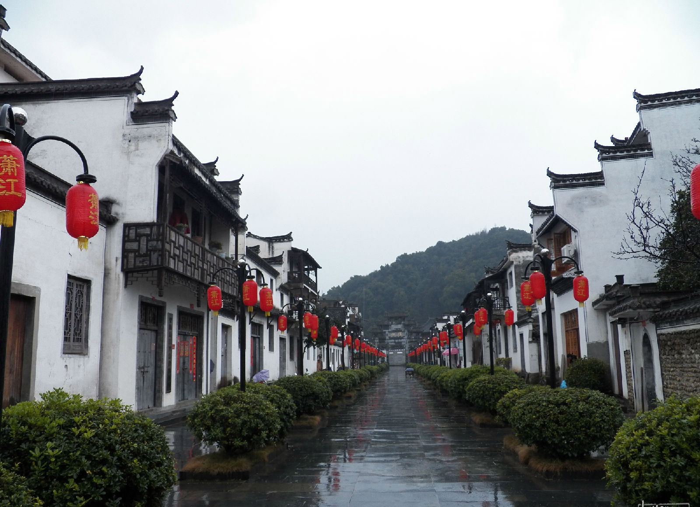
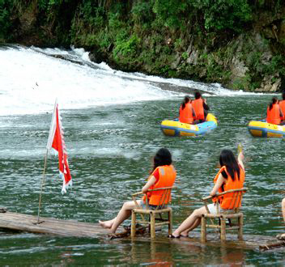
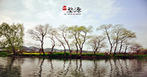

首页
关于
画廊
旅行
博客
联系我们
 
热门旅游目的地
婺源江岭
层层梯田，曲折线条，山谷盆地中的小河，河边聚集着村庄，四周围绕着青山，构成一副极美的风光画卷。
大鄣山卧龙谷
一幅天然泼墨山水画，一处都市人魂牵梦萦的乐土圣境。

汪口漂流
汪口山环水绕，风景秀丽，得山水之灵气，地灵人杰，尽享山水之美漂流之乐！
最好的时光
热门景点
包罗万象
江岭村是婺源看油菜花的最佳地点,3-4月间梯田上黄灿灿的油菜花,从山顶铺散到山谷下,还有黑瓦白墙的徽派民居与之呼应。
详情
李坑村口三两棵参天的樟树组成一片树林，清澈而又宽阔的溪水穿村而过，溪水清可见底，几棵大树依偎溪旁，几个小桥默默横架其上。
详情
江岭风光无限好，拾堤田而上，岚气升腾，重峦叠翠，溪水碧澄，粉墙黛瓦时隐时现，青苗绿茶连绵成片，田舍风光，平和恬淡，好一个“绿树村边合，青山郭外斜”，这可是旅游摄影人士绝佳去处。
详情

月亮湾依山伴水，水面平静如镜。一两叶小舟，远远近近高低错落的徽派民居互相辉映，形成了一幅绝美的画面。
详情
婺源是我国古建筑保存得最完整的地方之一，青林古木之间处处掩映着飞檐翘角的民居，其中汪口俞氏宗祠气势雄伟、工艺精巧，被专家誉为“艺术宝库”；
详情
在青山绿水中，不经意路过的一棵古树、一株老藤、一段断壁、一眼深井可能都蕴含着一个美丽的传说。对于游历过名城的海滨和名山大川的游客来说，来婺源旅游会感受到别一种宁静清悠的享受。
详情
简讯
订阅接收我们的资讯
常见问题
观点看法
友情链接
合作伙伴
保险公司
家庭旅行
联系方式：
400-800-800